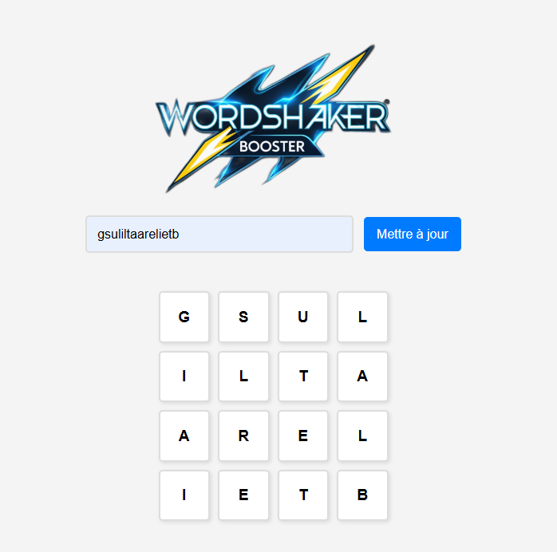
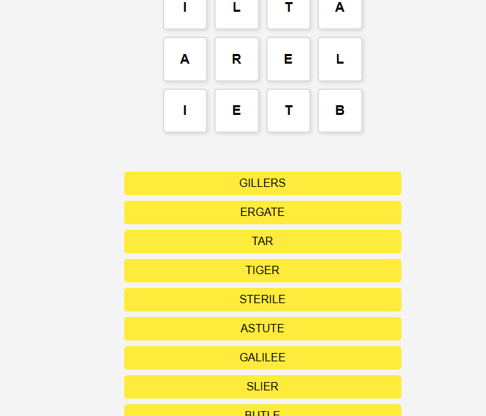

CampusConnect

Technos utilisées : JavaScript, HTML, CSS
Outil qui liste tous les mots valides pris en charge par la grille de Word Shaker, pour optimiser son score et maximiser les points en jeu.
Fonctionnalités principales
- 🧠 Recherche de tous les mots valides possibles selon la grille
- ⚡ Optimisation du score pour maximiser les points
- 📊 Interface simple pour sélectionner et comparer les mots
- 🔄 Mise à jour rapide des résultats selon les nouvelles lettres
Captures d’écran

